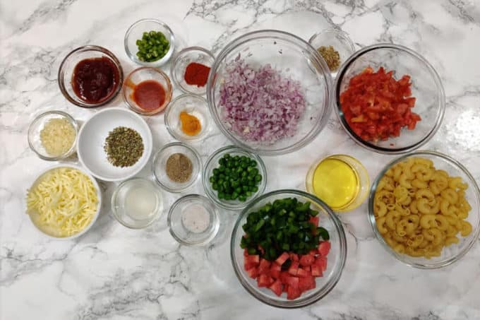

The Indian Style Pasta
An indian style pasta popularly known as desi pasta recipe is prepared with penne pasta with loads of spice to suit the indian taste buds. A range of masalas are used in this recipe.
I really like this food a lot. As we Indian's really like spicy and masala filled food 🌶. And If you're also a spicy food lover then once taste this food y'll never gonna leave this one.
Ingredients required
- Pasta
- Plain tomato sauce
- Veggies (carrot, beans, capsicum chopped finely)
- Onion (chopped)
- Chilli sauce
- Red chilli powder
- Garam masala
- Turmeric
- Olive oil
- Salt
- Cumin
- Garlic
- Coriander leaves
- Tomatoes (chopped)
- 
Procedure
- Heat 1 tablespoon of olive oil in a pan. When the oil turns hot, add cumin 🌾 .
- When they begin to splutter, then add finely chopped garlic 🧄.
- Fry till it begins to smell good for a minute or two 🍳.
- Add onions and fry until they turn pink 🧅.
- Then add chopped veggies and fry for about 2 mins 🥕 .
- Next mash the tomatoes well and add it to the pan along with salt 🍅 🧂.
- Cook until the tomatoes turn soft and blend well with veggies. The raw smell of tomatoes should dissappear 👃.
- Add coriander leaves, red chilli powder and masala powder 🥬.
- Stir well and fry for a minute. Switch off the stove .
- Now add the cooked pasta and 1 tbspn oil. Toss well. Adjust salt as needed 🍲.
- Add coriander leaves. If the pasta looks dry, then pour 1 to 2 tbspn's pasta cooked water.
- That's it. Serve masala past hot and enjoy your tasty food 🍝.


Your finished dish should probably look like one of the images above.